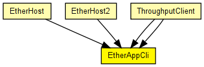
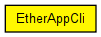

A simple traffic generator for the Ethernet model and the 802.11 model, and generally for any L2 model that accepts Ieee80211Ctrl control info on the packets. It generates EtherAppReq packets. It should be connected directly to EtherLLC or a Ieee802NicXXX module.
The following diagram shows usage relationships between types. Unresolved types are missing from the diagram. Click here to see the full picture.
The following diagram shows inheritance relationships for this type. Unresolved types are missing from the diagram. Click here to see the full picture.
If a module type shows up more than once, that means it has been defined in more than one NED file.
| EtherHost (compound module) |
An example host with one Ethernet port and traffic generators that generate Ethernet traffic directly. This host model does not contain higher layer protocols (IP, TCP). |
| EtherHost2 (compound module) |
Example host model with one Ethernet port and several traffic generators to create traffic in the test network. |
| ThroughputClient (compound module) | (no description) |
| ThroughputClient (compound module) | (no description) |
| Name | Type | Default value | Description |
|---|---|---|---|
| destAddress | string | "" |
destination MAC address, or module path name of destination station; empty means off |
| startTime | double | this.waitTime |
time of sending the first request |
| waitTime | double | uniform(0s,1s) |
interval between sending requests |
| reqLength | int | 100B |
length of request packets |
| respLength | int | 1KB |
length of response packets |
| registerSAP | bool | false |
whether to sent IEEE802CTRL_REGISTER_DSAP on startup |
| Name | Value | Description |
|---|---|---|
| display | i=block/app |
| Name | Direction | Size | Description |
|---|---|---|---|
| in | input | ||
| out | output |
// // A simple traffic generator for the Ethernet model and the 802.11 model, // and generally for any L2 model that accepts Ieee80211Ctrl control info // on the packets. It generates EtherAppReq packets. It should be connected // directly to EtherLLC or a Ieee802NicXXX module. // simple EtherAppCli { parameters: string destAddress = default(""); // destination MAC address, or module path name of destination station; empty means off double startTime @unit("s") = default(this.waitTime); // time of sending the first request volatile double waitTime @unit("s") = default(uniform(0s,1s)); // interval between sending requests volatile int reqLength @unit(B) = default(100B); // length of request packets volatile int respLength @unit(B) = default(1KB); // length of response packets bool registerSAP = default(false); // whether to sent IEEE802CTRL_REGISTER_DSAP on startup @display("i=block/app"); gates: input in @labels(Ieee802Ctrl/up); output out @labels(Ieee802Ctrl/down); }